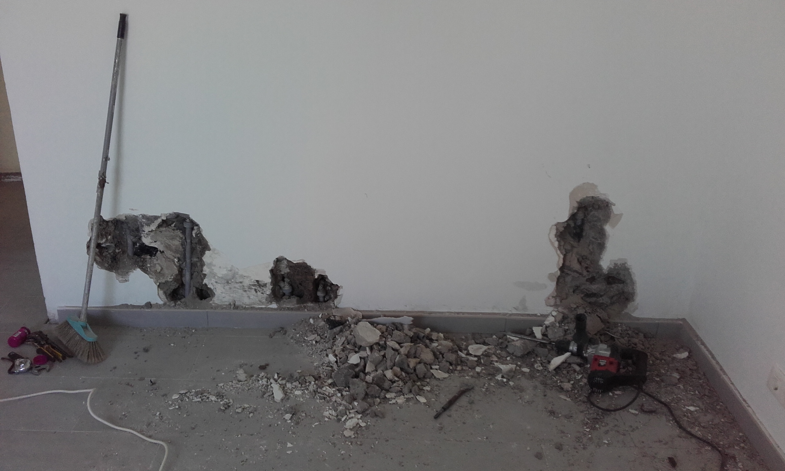
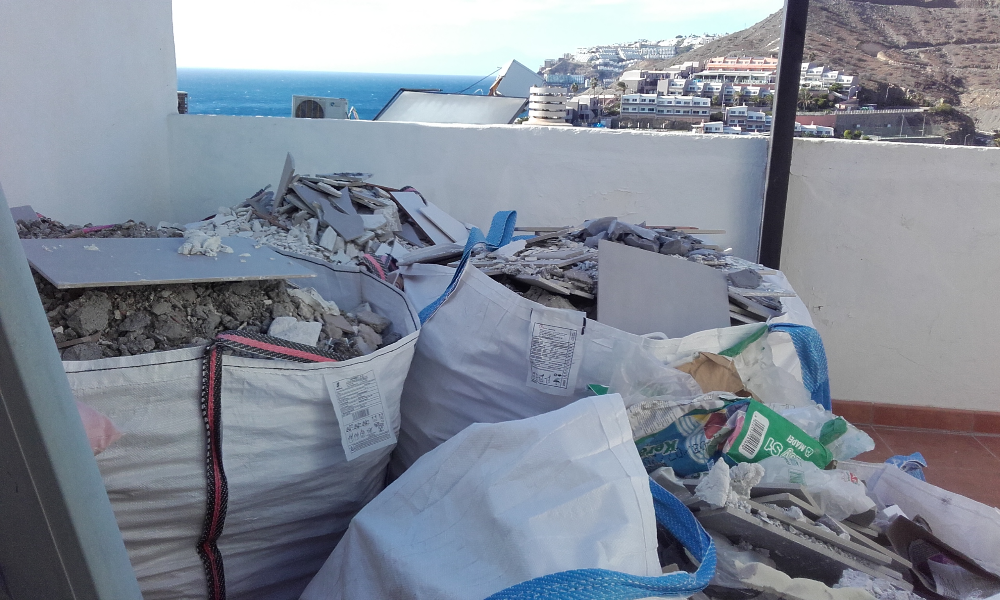

Det siste året har jeg lært spansk - ikke språket, men tenkemåten - ‘the hard way’. Jeg har fått lære hva kulturutrykket ‘mañana’ kan innebære i praksis. Og jeg har fått lære det ikke av spanjoler, men av ‘våre egne’ her nede på Gran Canaria. Noen av oss har blitt mer spanske enn spanjolene selv etter noen år her i varmen.
Det hele startet med at toalettet gikk lekk, en uke før jeg skulle reise hjem til Norge etter korona-nedstengningen i våres. ‘Aha’ tenkte jeg - nå har tiden kommet til å få renovert badet - og soverummet - som begge har hatt setningskader i gulv og vegg. En renovering som jeg har hatt i tankene i mange år,men som har blitt liggende der, fordi det ikke har vært akutt. Men nå ble de plutselig akutt! Og gamle trege meg giret om til modus: ‘action’!
Jeg kontaktet Carlos - den rumenske håndverkeren som har gjort jobber på huset for meg tidligere - men han var fullt booket. Så fant jeg en dansk håndverker - Ingolf fra Fyn - som jobbet i nabolaget i samarbeid med Vaktmester Geir - den gamle vaktmesteren på den norske skolen, som har startet egen virksomhet med tilsyn av nordmenns boliger her nede på øya. Ingolf kunne ta jobben og jeg fikk inntrykk av at han også kunne fagene: rørlegger, flislegger, murer, maler og elektriker - eller i det minste hadde folk i sin stall som kunne gjøre en god jobb - med betryggende tilsyn og kjennskap til norsk standard, ikke bare spansk. Ingolf med medarbeidere startet jobben tidlig i juli.Jeg fulgte arbeidet en uke - det så betryggende ut og virket projesjonelt - så jeg reiste beroliget hjem til Norge. Alt skulle være ferdig til jeg kom tilbake 17 september.
Koronaen tok en liten nedtur på ettersommeren og flytrafikken kom igang igjen - jeg kom meg nedover 26 september, en uke etter planen. Vaktmester Geir hadde sendt meg bilder av ferdige bad og soverum som så svært så flott ut og han la til ‘jeg er sikker på du blir fornøyd!“.
Jeg fikk derfor hakeslepp når jeg så hva som møtte meg: Her måtte noen ha glemt både water og vinkelhake. Flisefugene var ikke glatte og jevne,men humpet ivei. Flisgulvet var ikke flatt, men virket som en flytebrygge i lett sjøgang. Veggene på badet møttes ikke rettlinjet, men i en myk bue. Det nye gulvet var ikke i plan med det gamle: jeg hadde helt gratis fått et lite trinn opp på 3 cm til den renoverte delen av huset. Til gjengjeld var servantsokkelen og dørene kuttet av like mye i underkant, ellers ville de jo ikke passet inn.
Disse spenstige tilpasningene hadde hverken Ingolf eller Geir varslet meg om! Åpenbart mente de at leveransen var i sin skjønneste orden - eller så var de klar over at dette ikke var bra, men håpet likevel jeg ville godta resultatet. Jeg hører nok dårlig, men jeg ser bra - og har jo selv drevet i flisfaget hjemme på Dyrehaugen, og her møtte jeg amatørarbeid som var langt verre enn mitt eget! Så her var det bare å holde sinnet i sjakk og ta fram den kjølige sakligheten: Pekefingeren på saken og si: ‘Sånn skal det ikke være’ - her og her og her og her og ….
Det ble en lang liste. Heldigvis inså Ingolf at leveransen ikke holdt mål. Neste skritt var å overbevise ham om at her nyttet det ikke å flikke på overflaten - det var noe grunnleggende galt med hele arbeidet. Jeg sto på at alt det nye måtte rives og bygges opp igjen av skikkelige fagfolk med skikkelig tilsyn. Etterhvert gikk også Ingolf med på det - han erkjente at de folkene han hadde satt på oppgaven i sommer ikke var kvalifiserte - og han hadde da også gitt dem sparken!
Vi ble enige om at rivingen skulle starte den 26 oktober og at det skulle arbeides intensivt i to uker for å få alt ferdig til 6 november. Det startet bra med at Ingolf hyrte inn Guillermo med 3 øvrige medarbeidere. De rev flisgulvet på soverummet - og årsaken til ‘flytebrygge’-følelsen kom for dagen - flisefugene hadde ikke noe underlag. Gulvet var ikke blitt avrettet før flislegging. Under hver flis var det klasket en diger klump flislim og flisa var blitt trykket ned på midten. Flislimet var ikke kommet ut til kantene. Når alle flisene var fjernet sto det igjen et ‘bakebrett’ med flislim-boller av 2-3 cm høyde. Ikke rart at fugene var ujevne - det fantes ikke noe hold under dem for glatting. Likedan var det på baderomsveggene - det var ikke gjort noen avretting og etablert et jevnt, fast og flatt underlag for leggingen av flisene. Når jeg begynte å banke på flisene var det klart at det var hulrom både her og der. Når en av veggflisene ble fjernet dukket det opp noe som liknet på et fuglefjell - sementklumper og små ‘hyller’ som flisene hadde vært limt fast til. Det som var påført av membran var svært så hullete. Guillermo og folkene hans bare ristet på hodet - ‘loco,loco!’ Heldigvis var Guillermo’s folk dyktige flisleggere - de etablerte fast, flatt underlag og har nå lagt flisene som seg hør og bør!
Vel så viktig som flisene er selvfølgelig rørleggingsarbeidet - hele operasjonen startet jo med at det gamle toalettet begynte å lekke! Nå skulle alt bli fint og bra her på Casa’n. Etter nyleggingen av flisene kom baderomsutstyret på plass: dusj, servant, bidet og toalett. Men det lakk! Tilkoblingskranene ble tatt ned og montert med mer rørleggertape og flere omdreininger. Men det fortsatte å lekke! En runde til med samme medisin, men det lakk fortsatt! På’n igjen. Nok en runde og Ingolf fikk iallfall krantilslutningene til å være tette. Men på soverumsiden av veggen kom våte flekker til syne! Det var ikke annet å gjøre enn å gå løs på veggen - det var åpenbart koblingene inne i veggen der rørene kom opp fra gulvet som lakk. På’n igjen. Etterhvert fant Ingolf lekkasjene og fikk dem tettet. Når jeg skriver dette pågår arbeidet med å mure igjen veggen. Forhåpentlig dukker det ikke opp nye våte flekker i veggen.
Men en grunnleggende bekymring vil fortsatt være der i lys av det makabre rørleggerarbeidet som ble utført i første omgang - er det lekkasjer i rørene som ligger nedstøpt i soveromsgulvet? Disse er lagt som ‘rør i rør’ og teoretisk skal vann komme ut ved hovekrana i boden. Men hvis også omslutningsrøret er lekk? ….Da vil setningskadene i soverumsrumsgulvet dukke opp på nytt - om noen år. Her er det ikke annet å gjøre enn å vente å se - om ikke noen har noen avanserte lekkasjesøksteknikker å tilby i mellomtiden. Det går kanskje an å få tilgang til fellestunnelen som ligger under soverummet for å se om det pipler små dråper av vann der. Eller stenge av alle kraner for en lengre periode og se om det fortsatt dukker opp forbruk på vannregningen!
Per idag er det meste av det som gikk galt i sommer nå rettet opp. Min frustrasjon er at det har tatt så lang tid. Alt skulle vært ferdig 17 september, så gikk det galt og alt måtte gjøres om med ny frist 6 november, denne har ikke blitt holdt og per idag tar Ingolf sikte på 15 januar. Vi lever i mañana-land - denne gangen under norsk/dansk ledelse!
For å si det godt norsk: Ha-det på badet!

Bilde: Lekkasjejakt i den nye soverumsveggen

Bilde: Havutsikt i Mañana-land. Sommeren’s nye bad og soverum revet og puttet i sekker klare for avhenting. Men ikke nok med bygningsavfallet i forgrunnen. Over kanten på muren dukker den norske naboen’s ‘skraphandel’ opp - takinstallasjoner som ble ulovlig plassert av forrige eier, som ikke lenger er bruk, men som ikke blir fjernet. Det er av sine egne en skal ha det!